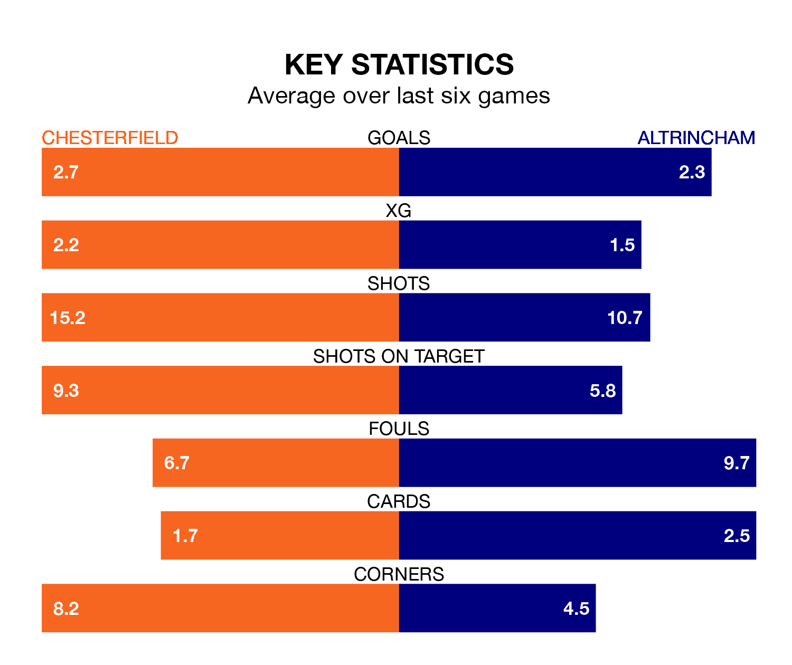

Chesterfield are heavy favourites to keep all three points at home in Tuesday's late kick-off against Altrincham.
The Spireites, who sit top of National League with 26 games played, are priced at 1.4 to seal victory at the SMH Group Stadium.
Sitting five places and 22 points behind them in the table, Altrincham are 6.5 to win with *Betting Company*, while the draw is at 5.0.
With 66 goals in 26 games so far this season, Chesterfield are the league's highest scorers with 2.5 goals per game. And they are conceding fewer than average, letting in 33 goals at a rate of 1.3 per game.
Altrincham are also above average scorers, with 1.8 goals per game, compared to a league average of 1.5. They have conceded 1.4 goals per game.
In the last 10 years, Chesterfield and Altrincham have played each other on seven occasions. They won three each, and they drew once.
On average, the Spireites scored 1.3 goals and Robins 1.3 in those matches.
Their last meeting was on August 26, when Altrincham won 2-1 at home.
The Spireites are in fantastic form in National League, with five wins and one loss from their last six games.
With three wins and two draws over that period, Robins' form is worse – they have taken 11 points from 18, compared to the hosts' 15.
Chesterfield's last match was on Wednesday, a 5-0 win against Gateshead, with Will Grigg (three), Michael Jacobs and Tom Naylor getting the goals for the Spireites.
Altrincham beat Barnet 3-2 last time out, on January 6, with Alex Newby, Christopher Conn and Lewis Baines on the scoresheet.
Updated: 14:53 (UTC), 16/01/24